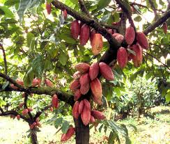

Cacaoyer

Cacaoyer (Theobroma cacao de la famille des Sterculiacées)
Attention : hautement toxique par ingestion pour le Korat !
Partie toxique pour les chats en général et le Korat en particulier :
Feuilles ainsi que le chocolat en cuisine.
Symptômes du processus pathologique :
Carnivores : après ingestion, vomissements puis symptômes nerveux (nervosité, halètement, agitation, ataxie, tremblements, hyperréactivité, convulsions) puis prostration évoluant vers le coma. La mort survient souvent de 6 heures à 3 jours par collapsus cardio-respiratoire.
Origine de la toxicité (principe actif) :
Théobromine, théophylline et caféine.
Remarque concernant le chocolat de cuisine :
Votre Korat peut vouloir y goûter et vous serez tentés de lui en donner. Attention, en croyant lui offrir une friandise, vous lui offrez un produit hautement toxique qui peut le tuer. Soyez particulièrement vigilants au moment des fêtes de fin d'année et de Pâques.
Le chocolat contient un alcaloïde, la théobromine, une substance toxique pour les animaux.
La Théobromine est toxique chez le chien et le chat à la dose de 100-150 mg/kilo
Plus le chocolat est noir, plus il est riche en théobromine.
Le chocolat noir en contient 4,58 à 6,52 mg/g –
la dose mortelle se situe de 15 à 22g de chocolat par kilo/animal
Le chocolat au lait en contient 1,55 à 6,52mg/g –
la dose mortelle se situe de 47 à 65g de chocolat par kilo/animal
Le chocolat blanc en contient 0,035mg/g
Cacao en poudre en contient 10 à 30mg/g
Coques de caco en contient 2 à 30 mg/g –
la dose mortelle se situe à 3g de coques par kilo/animal
La dose mortelle pour un Korat de 5kg se situe à environ 75 grammes de chocolat noir ou 200 grammes de chocolat au lait. Mais l'intoxication est observée après ingestion de doses 2 à 3 fois inférieures.
Attention car le chocolat se cache également dans de nombreuses friandises comme les bonbons mais aussi dans les pâtisseries comme la traditionnelle bûche de Noël.
Chez l'animal, la théobromine est métabolisée très lentement. La substance s'accumule dans l'organisme et une petite quantité ingérée vous paraîtra sans importance mais elle viendra se cumuler aux doses déjà ingérées les jours précédents.
Pour cela, il est beaucoup plus prudent de ne jamais offrir de chocolat à un Korat ni un autre animal. Par exemple un carré de chocolat donné chaque jour à un chien provoquera une insuffisance cardiaque.
Les symptômes
Les symptômes apparaissent 4 à 5 heures après l'ingestion.
Ce sont :
Vomissements, 1ers symptômes visibles auxquels il convient de réagir rapidement,
Hyperactivité, nervosité, excitation,
Irrégularité cardiaque,
Tremblements et perte d'équilibre,
Convulsions,
Coma,
Plus rarement Diarrhée, Incontinence urinaire, Hypersalivation, Halètements.
La mort peut intervenir 6 heures à 3 jours après l'ingestion.
Le Korat intoxiqué doit être conduit très rapidement chez un vétérinaire. Il n'existe pas d'antidote à la théobromine. Le traitement consistera à l'aider à éliminer la substance toxique, à soutenir la fonction cardiaque, à stopper les tremblements.
Précisez au vétérinaire quel type de chocolat votre Korat a mangé et la quantité ingérée.